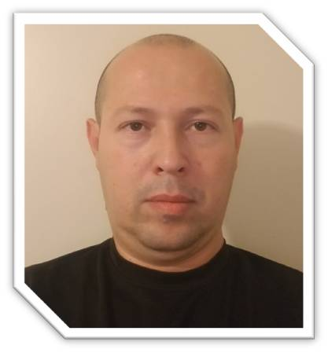

HOJA DE VIDA
Datos Personales

Nombre: Diego Mauricio Isaza Hincapie
Edad: 41 años
Nacionalidad: Colombiano
Fecha de Nacimiento: Mayo, 3 de 1977
Email:misaza200@hotmail.com
Perfil Ocupacional
Tecnólogo en Entrenamiento Deportivo comprometido con mis ideales tanto
personales como profesionales, con alto sentido de pertenencia con mí la labor,
altos conocimientos como entrenador deportivo con personas convencionales y
manejo de personas en situación de discapacidad (Parálisis Cerebral, Ciegos,
Sordos, Físicos y Cognitivos) y muy buen manejo de grupos.
Me desempeño como:
Orientador, facilitador de procesos pedagógicos y didácticos del entrenamiento
deportivo de personas convencionales y discapacidad, en federaciones, ligas y clubes
deportivos, entidades territoriales, cajas de compensación familiar, organizaciones no
gubernamentales, escuelas deportivas, instituciones educativas, empresas públicas y
privadas.
- Fundamentador de procesos de entrenamiento deportivo, en escuelas deportivas,
como asistente técnico o entrenador principal de selecciones deportivas en sus
diferentes niveles.
- Asistente técnico o entrenador principal de selecciones deportivas del deporte de
acuerdo con la disciplina y modalidad deportiva y categoría del participante, en
federaciones, ligas y clubes del deporte asociado.
- Preparador físico del deporte, de acuerdo con la disciplina y modalidad deportiva y
categoría del participante en federaciones, ligas y clubes del deporte asociado,
entidades territoriales, cajas de compensación familiar, organizaciones no
gubernamentales en instituciones educativas, empresas públicas y privadas.
- Metodólogo deportivo, de acuerdo con la disciplina, modalidad deportiva y categoría
del participante en federaciones, ligas y clubes del deporte asociado, entidades
territoriales, cajas de compensación familiar, organizaciones no gubernamentales,
escuelas deportivas, instituciones educativas, empresas públicas y privadas.
- Como entrenador personalizado en gimnasios y centros especializados de actividad
física.
Educacion
Experiencia
Fundacion Jacob Isaza Gil
Enviar Email
celular:3367697276 -- 5023 Winster cir. apt 102 winston Salem NC